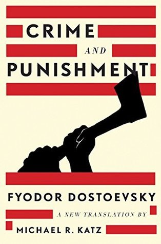

Crime and Punishment (pre-reform Russian: Преступленіе и наказаніе; post-reform Russian: Преступление и наказание, tr. Prestupléniye i nakazániye, IPA: [prʲɪstʊˈplʲenʲɪje ɪ nəkɐˈzanʲɪje]) is a novel by the Russian author Fyodor Dostoevsky. It was first published in the literary journal The Russian Messenger in twelve monthly installments during 1866. It was later published in a single volume. It is the second of Dostoevsky's full-length novels following his return from ten years of exile in Siberia. Crime and Punishment is considered the first great novel of his "mature" period of writing. The novel is often cited as one of the supreme achievements in literature. Crime and Punishment focuses on the mental anguish and moral dilemmas of Rodion Raskolnikov, an impoverished ex-student in Saint Petersburg who formulates a plan to kill an unscrupulous pawnbroker for her money. Before the killing, Raskolnikov believes that with the money he could liberate himself from poverty and go on to perform great deeds. However, once it is done he finds himself racked with confusion, paranoia, and disgust for what he has done. His justifications disintegrate completely as he struggles with guilt and horror and confronts the real-world consequences of his deed.
